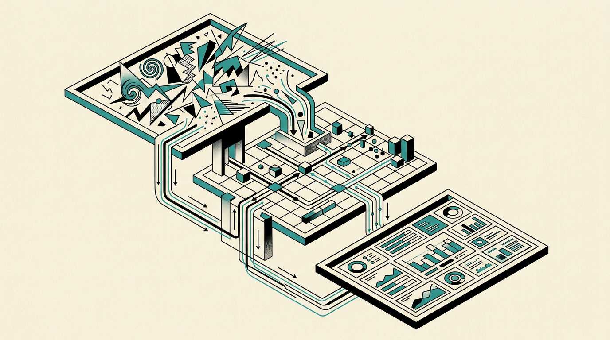
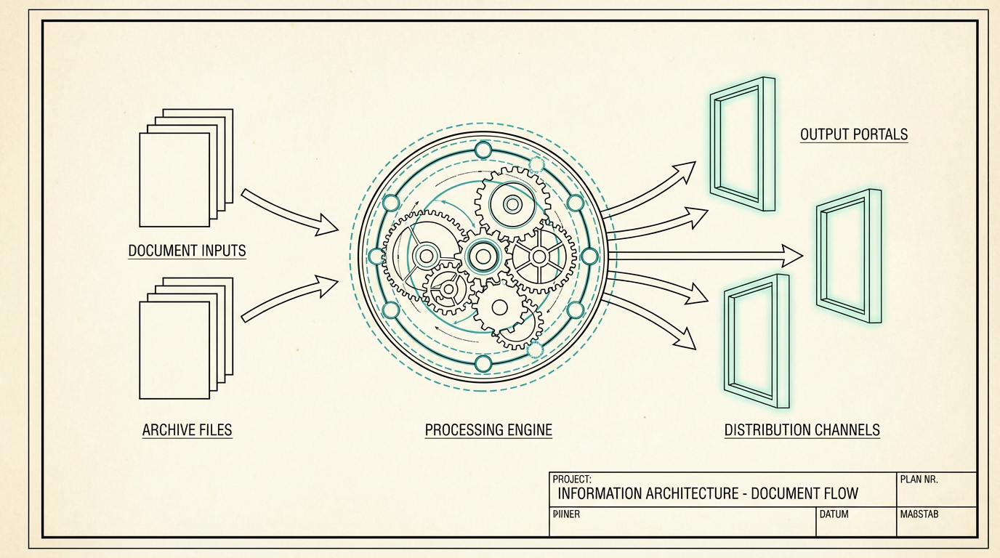
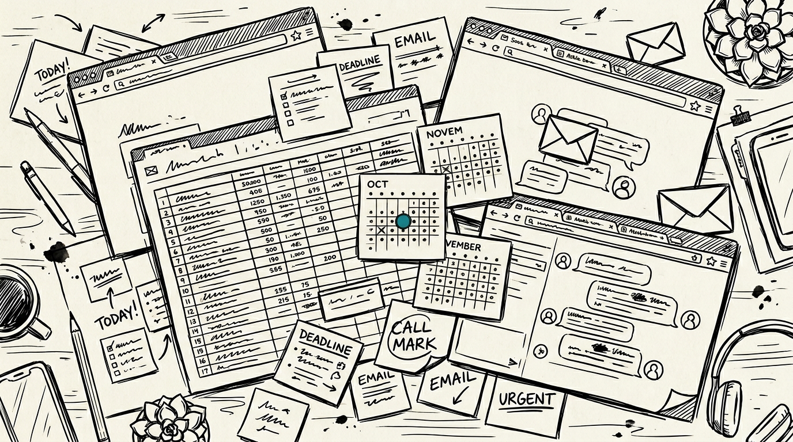
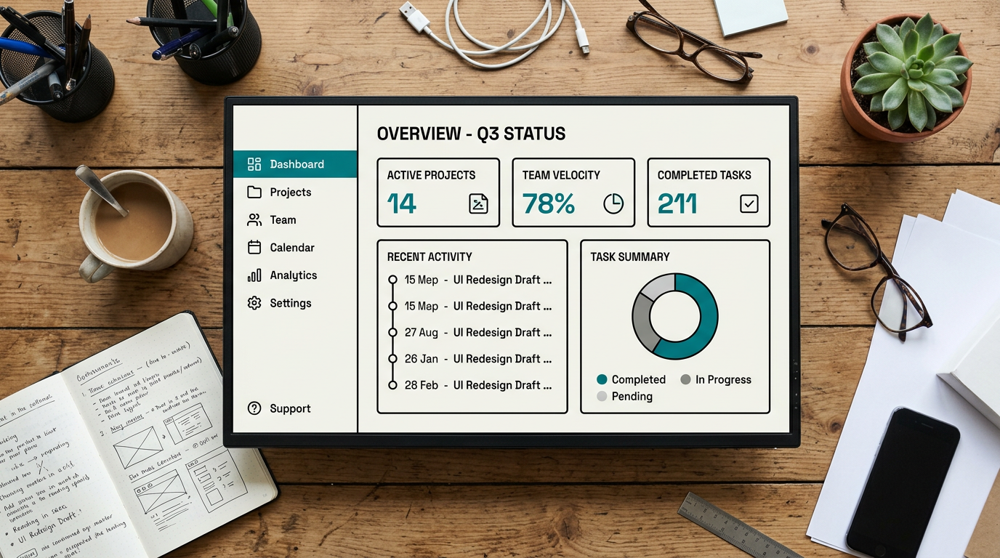
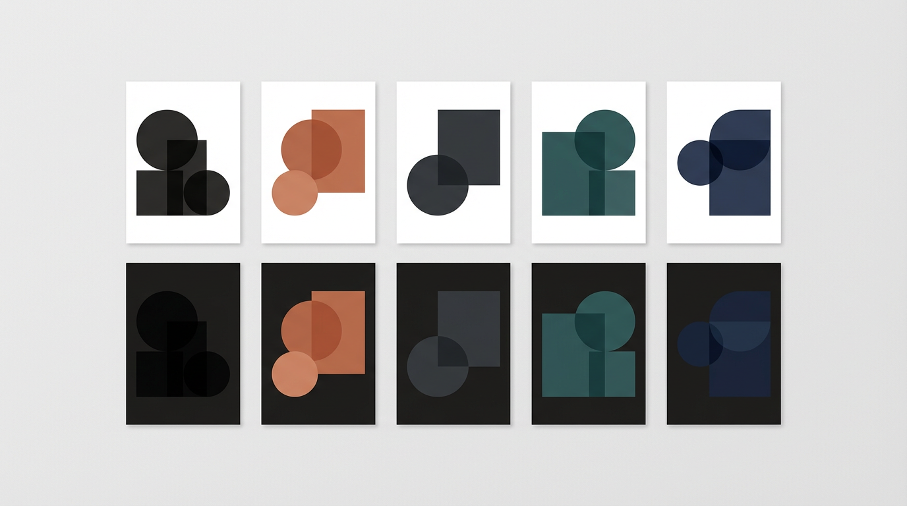
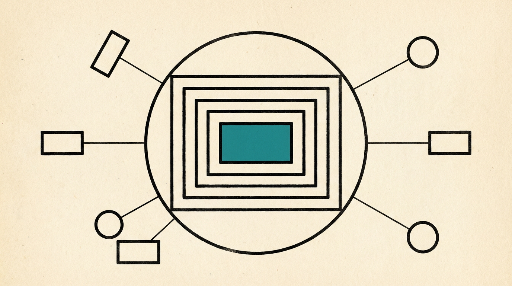

Business OS.
Every surface a solo
business needs.
How scattered business data becomes a knowledge system that compounds — markdown, vanilla JS, and AI.
Luis Cielak
luiscielak.com

Raise your hand if it's in more than 5 tools.
Keep it up if it's more than 10.
CRM
- Contacts
- Deals
- Notes
Spreadsheets
- Finance
- Pipeline
- Planning
Docs / Notion
- Strategy
- Brand
- SOPs
Each tool does its job. None of them talk to each other. Every decision costs you a search.
You need a layer that makes
your tools compound.
Inputs
Raw business data from many sources — scattered across tools by default. The portal gives them a home.
Knowledge
Markdown is the source of truth. Sync scripts compile it into portal data. AI maintains it — you direct.
Insights & decisions
Not a dashboard you stare at. A system you operate through.

The raw material. Everything your business already produces.
- CRM notes & deal history
- Financial reports & production-run data
- Strategy & planning docs
- Operations & SOPs
- Marketing copy & brand guidelines
Markdown as source of truth. Compile, don't copy.

- One file is the source. Everything else is compiled.
- AI maintains the structure. You direct the decisions.
- Git is your version history. Cursor is your editor.
Decision-grade views you open when you're about to act.
Dashboard
- Revenue MTD
- Active accounts
- Top SKU
Pipeline
- Accounts by status
- Last contact
- SKUs carried
Finance
- Revenue by run
- Pricing emulator
- Margin by SKU
Same pattern as buss-os.luiscielak.com — shown here with YCC as the workshop-sized demo.
Before
Strategy in a doc updated twice a year. Pipeline in a spreadsheet. Finances in another tool. Notes in a folder nobody reopens.

After
One portal. One navigation. One design system. Pull up the view you need before the call — pipeline, finance, brand voice — and watch new inputs ripple through automatically.

Palette × mode stay orthogonal — change a token and the whole portal moves together.


Yeast Coast Culture — fermentation & pickling; flagship product is a dehydrated sourdough starter.
Open YCC portal in browser — index.html → dashboard
Navigate to Planning — "this is Layer 3 — insights & decisions"
Open inputs/90-day-plan.md in Cursor — "this is a raw input, Layer 1"
Run node skills/sync-plan.js
Reload planning.html — new milestone appears — "this is Layer 2 doing its job"
Markdown is the source of truth
Portable, diffable, AI-friendly.
Compile, don't copy
One edit propagates everywhere via sync scripts.
AI maintains; you direct
The model handles syncing; you own the decisions.
Own your infrastructure
No SaaS lock-in; everything in a git repo you control.

+ Every exploration adds up — sessions feed back into the knowledge base instead of evaporating in chat.
- What tools do you use?
- Where does your roadmap live?
- Where does financial data live?
- Where do your OKRs / quarterly goals live?
- –
- –
- What would your
inputs/90-day-plan.mdcontain? (milestones, bets, owners) - What fields does it need?
- What does the sync script output?
- –
- –
- –
- What would
planning.htmlshow the team every Monday? - What question do you answer weekly?
- What view changes your week?
- Who else on your team needs it?
- –
- –

Case Study
buss-os.luiscielak.com
Starter Repo
github.com/luiscielak/
Community
Cursor Philly · cursorphilly.com